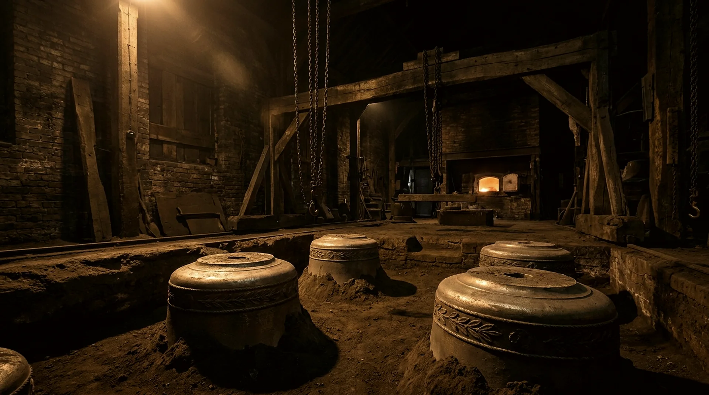

The house · Aldenmoor
One yard, five generations
The foundry stands where Josiah Harlowe first dug a casting pit in 1842 — same yard, same gates, same trade. Nearly everything else has been rebuilt at least once, including, several times, the family's understanding of what a bell is. The constant is the pit and the patience.

The annals
Entered in the book
Josiah Harlowe digs the pit. A wheelwright's son with a borrowed furnace casts his first service bell for the chapel at Aldenmoor. It still rings the half-hours.
The first ring of eight leaves the yard by canal barge. The boatman is paid partly in beer, a practice since discontinued and occasionally mourned.
The tuning shop is built. The second generation takes up the new science of the five partials and true-harmonic tuning, and stops trusting its ears alone. The ears stay on the payroll regardless.
The yard goes quiet. The furnace is given over to war work, and the day book records two years with no bells in it — the only silence in the family's keeping.
The recasting years. A decade of remaking what the war took, pouring parish bronze back into parish bells across England and the Continent.
First full carillon — forty-seven bells for a Flemish belfry, and a taste for instrument work that never left the house.
“Patience” arrives — the vertical tuning lathe, eleven tonnes of Sheffield iron, named by the tuner who would spend thirty years listening to it.
The fifth generation takes the keys, and with them the rule the first generation set: the founder whose name is on the gate pours the metal.
Casting, tuning, hanging, keeping. New bells on the book for three continents, and survey ladders in a dozen old towers this season.
The craft
Slow hands, true notes
Our moulds are loam — clay, sand and hair, swept to profile with a strickle board — because loam holds detail the way sand cannot, and a bell's ornament is cast, never engraved. Our metal is 77 parts copper to 23 of tin. Our tuning is true-harmonic: hum, prime, tierce, quint and nominal brought within ten cents of their places on the vertical lathe, by cutting and listening in turn. None of this is nostalgia. It is simply what a five-hundred-year working life demands.


Visits
The gates open
A working foundry is loud, hot and magnificent, and we think people should see it. We open the yard monthly, and welcome ringers, schools and the simply curious by arrangement. Pour days are announced to the visiting list a week ahead — seeing metal move is worth rearranging a diary for.
Open days
First Saturday of every month. Casting pit, tuning shop and the pattern loft, with a founder as guide. No booking for individuals; just come.
10:00 – 16:00 · Free
Groups & schools
Ringing societies, schools and study groups by arrangement, most weekdays. Write ahead and tell us what the group would most like to see.
By letter or the enquiry book
Find the yard
The Bell Yard, Foundry Lane, Aldenmoor — ten minutes' walk from the station, under the gate with the bell hung over it. You will hear us before you see us.
Deliveries by the canal gate
Come and hold your note
The best commissions begin in the yard, with the furnace going and a cup of tea. Failing that, the enquiry book is always open.